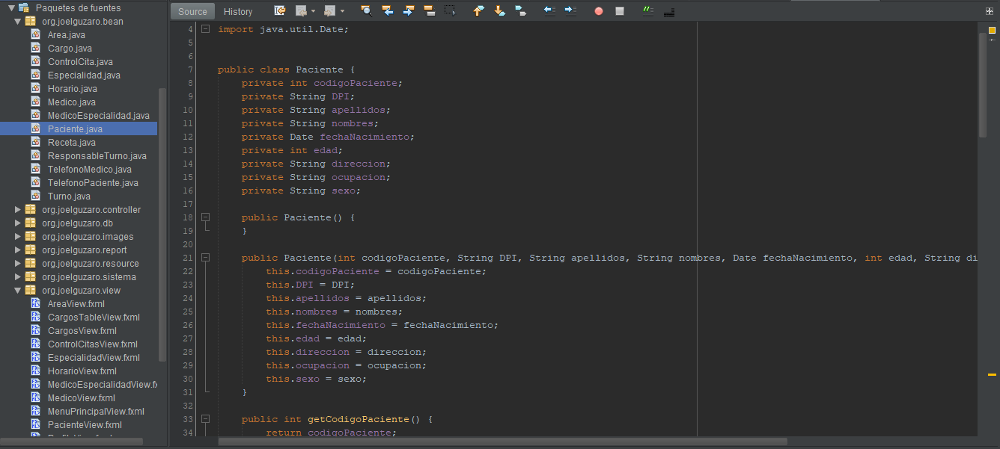
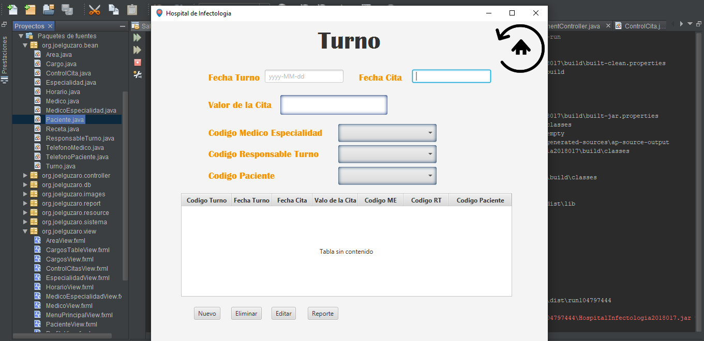
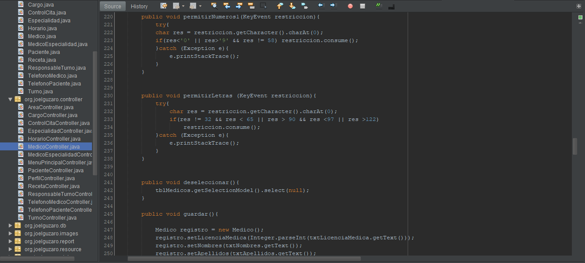

Sistema de Hospital JAVA
Fecha de Realizacion: 03/09/2019
El Sistema de Hopital es un programa escrito en codigo Java compilado en el mismo, se utilizo el patron de diseño Modelo-Vista-Controlador para la estructura, al ser MVC para la creacion vistas se hizo uso de la herramienta JavaFx, en cuento a base de datos se utilizo el Gestro de Base de Datos MySQL con un diagrama relacional y una base de datos relacional, el proyecto fue desarrollado en el IDE de codigo Netbeans en su version 8.2
Es un programa de escritorio como anteriormente se mencionaba desarrollado en Java ya que este es un lenguaje orientado a objetos el cual facilito el desarrollo del mismo, la funcion principal y general de este proyecto es gestionar las acciones que se realizan en un hospital como por ejemplo la inscripcion de pacientes, las citas que a estos se les asigna, el registro de medicos, sus horarios y la disponibilidad de estos para atender las citas, a los medicos se les clasifica por especialidad para una mayor eficacia, el programa tambien funciona como inventario de medicamentos ya que tiene la funcion para registrarlos, y llevar un control de estos, un hospital esta conformado por areas y este programa tambien permite separar estas con el objetivo de controlar el trabajo de sus empleados, los formularios fueron diseñados en JavaFX e implementados en Java, el programa tiene validaciones que brindaran una mejor experencia de uso a los usuarios, esta conformado por 13 Modelos en los que se reflejan datos importantes al momento de gestionar un Hospital, tambien cuenta con 15 controladores cada uno con funciones especificas y por ultimo se encuentran 14 vistas cada una diseñada con diferentes objetos. En el apartado de Base de datos, esta diseñada en MySQL junto con un diagrama que facilita su entendimiento esta base de datos es 100% relacional y esta compuesta por 13 Tablas.
Java es un lenguaje que mi conocimiento es muy limitado y tengo muchas mas cosas por aprender, al realizar este proyecto mis conocimientos sumamente basicos dejaron serlo ya que requeria de logica y utilice funciones y que se complementaban con una conexion a la base de datos que no habia hecho antes.
Para acceder al proyecto ingrese al siguiente link de github Click Aqui
- 
- 
- 